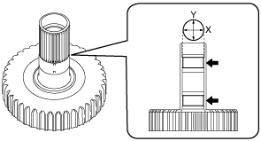

1. Measure the inner diameter of the bushing in two locations shown in the figure.
Note
• When measuring, measure near the center of the bushing avoiding the oil groove, and then calculate the average value of the X and Y directions as shown in the figure.
• Recommended measuring instrument: Cylinder gauge or caliper gauge

azzjjw00001348
Maximum
24.661 mm {0.97091 in}
• If it is the maximum specification or more, replace the low clutch hub with a new one.